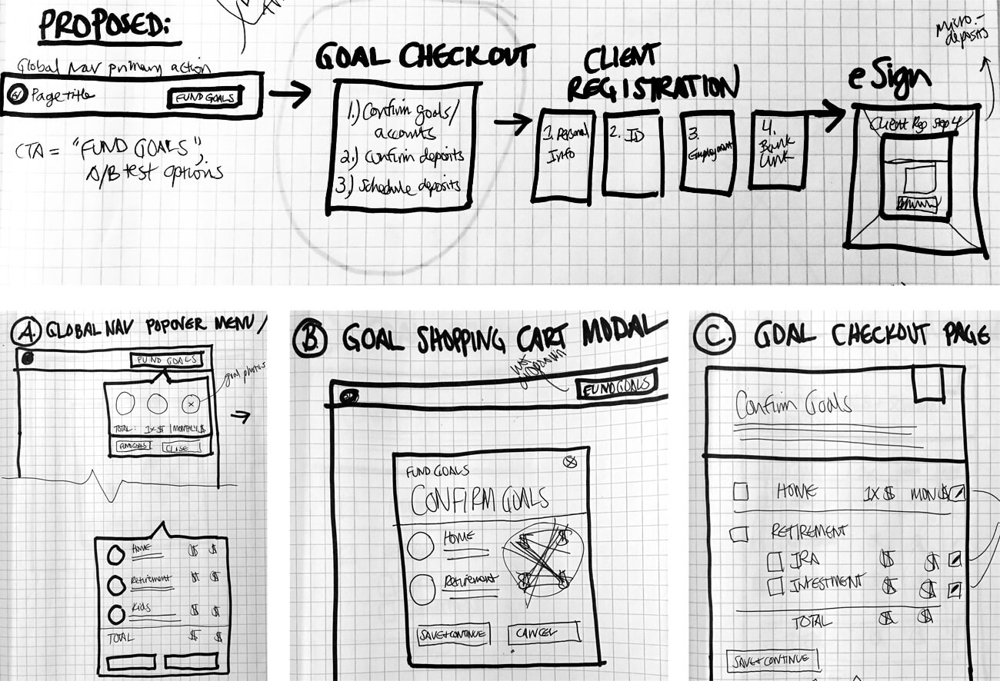
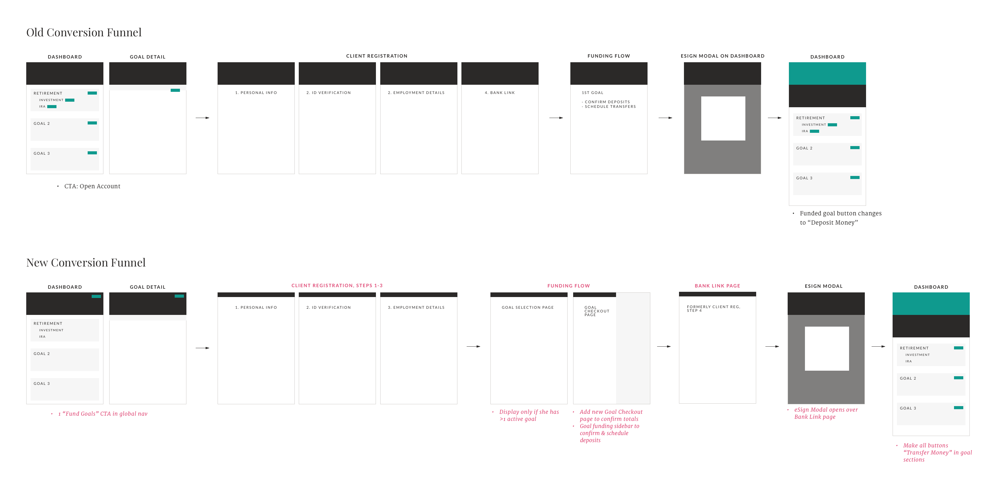
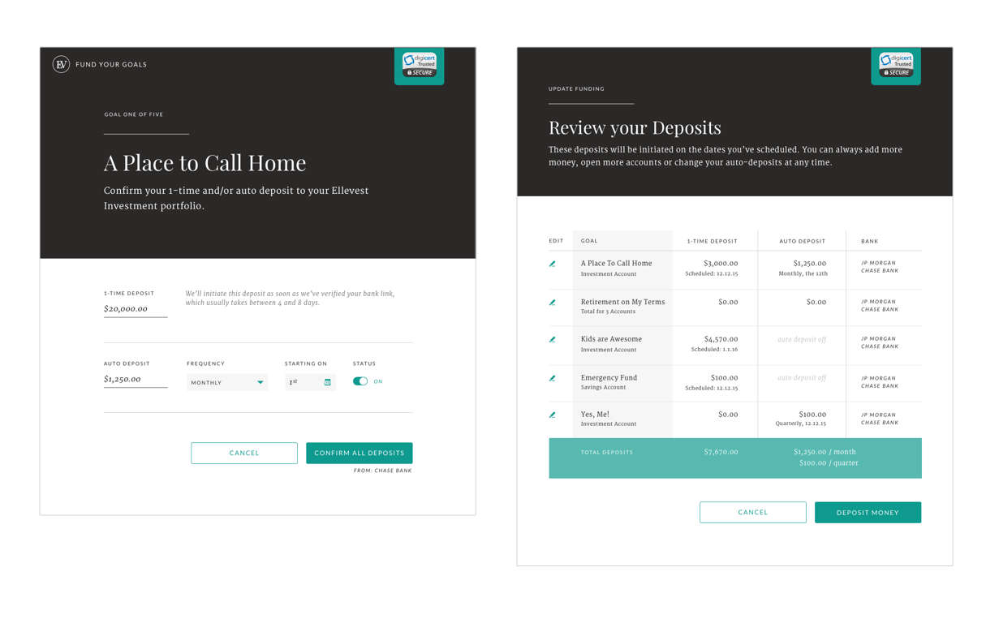
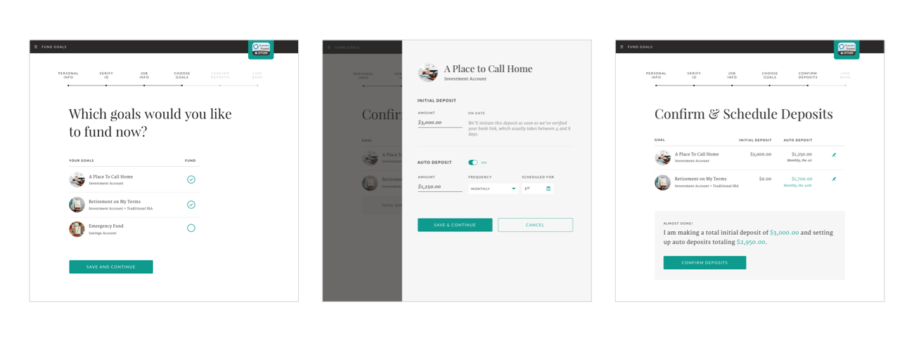
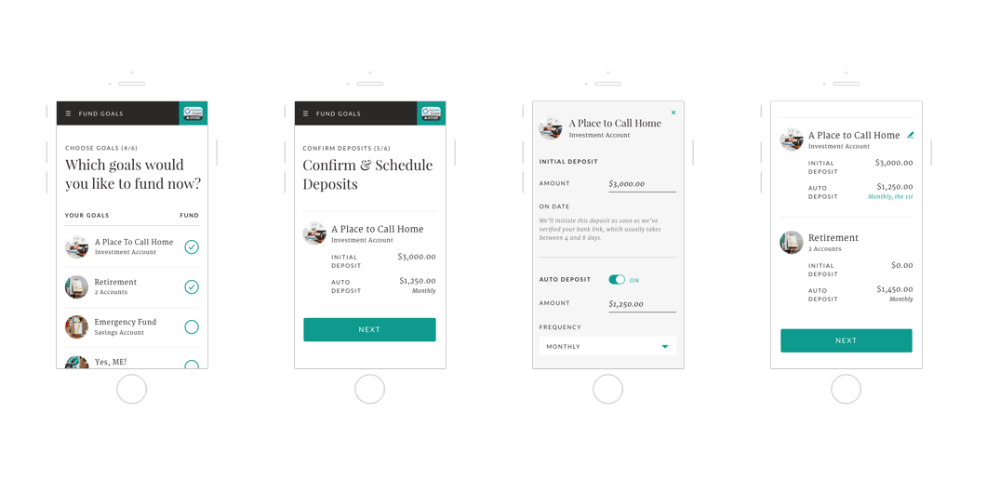

Conversion funnel
Iterating on the client funding flow
User Research, UX Design, Visual Design, Responsive Web
View projectAfter shipping the MVP of Ellevest, a goal-based digital investment platform for women, I conducted a user research campaign to gather initial product feedback. Patterns began to emerge in the users' pain points, especially during the conversion funnel.
I began my design explorations with wireframes and tested variations of the funding flow. I iterated on the most successful prototype incorporating feedback, and collaborated with Product and Engineering through development. The updated flow launched in the fall of 2016.

Initial sketches

Wireframes of old and new conversion funnels

Old funding flow

New goal selection and goal checkout pages

Mobile